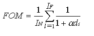

For All Functions:
Kirsch, Pyramid, Robinson:
Sobel, Prewitt:
Roberts,
Laplacian:
Frei-Chen:
After setting the desired parameters, press the ‘Apply’ button at lower right to perform the operation. Currently, these functions return an image which contains the magnitude information only.
The use of a ‘Pre-filter’ will cause the current image to be processed with the chosen filter before edge detection takes place. This is typically some form of a smoothing filter that is used to smear out high-frequency noise, thereby helping to eliminate false edges caused by noise.
The use of a ‘Post Threshold’ value will cause the image that results from the edge detector to have binary thresholding performed on it. If you use the default ‘No post threshold’, you can manually apply thresholding to the resultant image with the ‘Threshold current image at’ at the bottom of the window or from the ‘Utilities -> Convert’ window.
Note that the output image from an edge detection operator is of SHORT data type, so may exceed the 0-255 BYTE range. If you use the histogram to select a threshold value, be aware that the histogram is linearly remapped to BYTE for display. The image data range can be found by using the ‘Utilities->Stats->Image data range’ selection. A good method for threshold selection is to start with the midpoint of this range, and then decrease it until desired results are obtained.
Note: If the kernel size is selected more than 17, it may exceed the data range causing invalid image output. Also, depending upon the image data, very large kernel size may cause CVIPtools to fail.
Select a Pre-filter, if desired, from the pop-up menu. Select or enter a Post-threshold value, if desired. The Kirsch and Robinson use 8 masks and will provide similar results, since the Robinson uses a simplified version of the Kirsch masks. As a result of the specific mask coefficients, the Robinson returns an image with a smaller data range. The Pyramid operator uses 2 masks and will return wider edges, since this implementation is based on 7x7 masks, and the Kirsch and Robinson are based on 3x3 masks. Kirsch and Robinson filters returns magnitude image and direction image. Data range of direction image is from -3pi/4 to +pi.
Enter or select from the pop-up menu a kernel size; in general the larger the kernel size, the wider the resulting edges. That is, the edges appear more smeared out in the resulting image. Select a Pre-filter, if desired, from the pop-up menu. Select or enter a Post-threshold value, if desired. Finally, choose whether or not to keep dc. If the ‘Keep DC’ option is selected, the output image will retain more of the original image, not just the edges. Also the function returns magnitude image and direction image. Data range of direction image is from -pi to +pi.
Select which type/mask to use, select the ‘Show Type/Mask’ button to see them. Select a Pre-filter, if desired, from the pop-up menu. Select or enter a Post-threshold value, if desired. Finally, choose whether or not to Keep DC. If the ‘Keep DC’ option is selected, the output image will retain more of the original image, not just the edges. Note that the Roberts Type 2 is probably the fastest edge detector. The Laplacian, unlike the others, retains the sign of the result with the output image (the sign corresponds to the “direction” of the edge).
First select the Frei-Chen subspace
desired: line, edge, max, or min angle. The line and edge subspace selections
use the corresponding four line or edge masks as the subspace of interest. The
max selection will select the maximum of the edge or line subspace projections.
The ‘min angle’ returns the result from the edge and line projection that has
the minimum angle between that particular vector (corresponding to the current
pixel) and these two subspaces. The minimum angle corresponds to the closest
fit, without consideration of magnitude.
|
|
|
|
edge subspace: |
|
|
|
If you want to set a threshold on the edge projection, select
‘Threshold Angle’, then enter or select a value in
degrees. |
|
line subspace: |
|
|
|
If you want to set a threshold on the line projection, select ‘Threshold Angle’, then enter or select a value in degrees. If you don’t want to set a threshold on the line projection, select ‘Threshold Angle’ |
|
max[edge/line or min angle[edge/line: |
|
|
|
Angle threshold does not apply. After selecting the projection, select a Pre-filter and/or Post-threshold if desired, and choose whether or not to keep dc. |
|
|
|
First select the desired
variance for Marr-Hildreth: single variance or double
variance. Then select or enter the sigma and delta values. If you want to post
process the image by combining the bands then check the box next to
‘Post-Process by Combining Bands’. If you select the Dual Variance then you can
see the intermediate images generated in this process by checking the option
‘Show intermediate Images’. After
selecting the parameters press the ‘Apply’ button to the lower right to get the
edge detected image.
The Canny edge detector is optimal for step edges corrupted by white noise. It requires selecting and entering three parameters: "High threshold factor", "Low threshold factor", and "Variance". The high threshold is computed from the image which is greater than 90% of the pixels after applying non maxima suppression to the magnitude images. The high threshold is multiplied with high threshold factor to obtain the final high threshold for hysteresis. The low threshold is computed from the image by averaging the high threshold and minimum value in the image after applying the non maxima suppression to the magnitude images. The low threshold is then multiplied with the low threshold factor to obtain the final low threshold for hysteresis. The variance refers to the variance of the Gaussian filter. If you want to view the intermediate magnitude and direction (phase) images check the box next to ‘Show Intermediate Images’. After setting the parameters press the ‘Apply’ button to the lower right to get the edge detected image.
The Shen-Castan edge detector was developed as an optimal
solution to a specific mathematical model. The optimal filter used to smooth
the image is the Infinite Symmetric Exponential Filter (ISEF). It requires
selecting and entering five parameters: "High threshold factor",
"Low threshold factor", "Smoothing factor", "Window
size", and "Thin factor". The high threshold is computed from
the image which is greater than 90% of the pixels after applying non maxima suppression
to the magnitude images. The high threshold is multiplied with high threshold
factor to obtain the final high threshold for hysteresis.
The low threshold is computed from the image by averaging the high threshold
and minimum value in the image after applying the non maxima suppression to the
magnitude images. The low threshold is then multiplied with the low threshold
factor to obtain the final low threshold for hysteresis.
The input image is convolved with ISEF filter of the selected smoothing factor,
to mitigate the noise effects. However the computation is increased by using
recursive filters. The window size is the size of the window for false zero
crossing suppression, which is used to remove spurious edges. The thin factor
is the distance between the final line points which is used to apply thinning.
If you want to view the intermediate magnitude and direction (phase) images
check the box next to ‘Show Intermediate Images’. After setting the parameters
press the ‘Apply’ button to the lower right to get the edge detected image.
The Boie-Cox edge detector is a generalization of Canny algorithm. It requires selecting and entering five parameters: "Ordinary threshold", "hysteresis threshold", "Variance", and "Thinning edge". The ordinary threshold is computed by entering the "Threshold factor". If the threshold factor is 1, then the mean absolute value of the image is used as the threshold value. If the threshold factor is not equal to 1, then threshold value is equal to threshold factor * mean absolute value of the image. The hysteresis threshold is computed by entering the "Low threshold factor" and the "High Threshold factor". The high threshold is computed from the image which is greater than 90% of the pixels after applying non maxima suppression to the magnitude images. The high threshold is multiplied with high threshold factor to obtain the final high threshold for hysteresis. The low threshold is computed from the image by averaging the high threshold and minimum value in the image after applying the non maxima suppression to the magnitude images. The low threshold is then multiplied with the low threshold factor to obtain the final low threshold for hysteresis. The variance refers to the variance of the Gaussian filter. If the thinning edge is not selected, thinning is not performed which implies that the thickness of the edges is not reduced. If thinning edge is selected, thinning is performed. If you want to view the intermediate magnitude and direction (phase) images check the box next to ‘Show Intermediate Images’. After setting the parameters press the ‘Apply’ button to the lower right to get the edge detected image.
The ‘Line Angles’ entry refers to the angle a desired line makes with the column (horizontal) axis in the current image, in a clockwise direction. The range on the angles is 0 to 180 degrees. For example, to find a line that runs from the upper-left to the lower-right corner, enter 45 as the line angle. To find a line that runs from the lower-left to the upper-right, enter 135 as the line angle. Note: the angle of the line itself is different from the angle of ‘rho’ (the normal to the line).
You may specify ranges of angles with a dash, such as 45-55, and you must use a blank space as a separator, as in 0 45-50 90.
After entering the line angles, select or enter both the minimum number of pixels that define a line and the maximum connect distance. Note that the “Line Pixels(min)” applies to all pixels on a given line, so they are not necessarily connected. Also, the connect distance applies to all lines, so this will tend to fill in open places if too large a number is selected (see ‘Edge Link’ below).
Note: the Hough transform is typically applied to an image after edge detection and thresholding have been performed.
Select or enter the maximum ‘Connect distance’, this corresponds to the maximum ‘open’ area between points that will be filled in. Edge linking is normally performed on an image after edge detection AND thresholding has been performed. Note that this edge linker tends to fill in small open areas, this is due to the fact that it considers ALL lines and not just the ones you think appear in the image.
This function calculates the Pratt’s Figure of Merit of the image. The Pratt FOM, is defined as follows:

IN = the maximum of II and IF
II = the number of ideal edge points in the image
IF = the number of edge points found by the edge detector
α = a scaling constant that can be adjusted to adjust the penalty for offset edges
di = the distance of a found edge point to, an ideal edge point
For this metric, F will be 1 for a perfect edge. Normalizing to the maximum of the ideal and found edge points guarantees a penalty for smeared edges or missing edge points. In general, this metric assigns a better rating to smeared edges than to offset or missing edges. This is done because techniques exist to thin smeared edges, but it is difficult to determine when an edge is missed. The distance, d, can be defined in more than one way and typically depends on the connectivity definition used. To use, select the ideal edge image and the edge detection image from the pop-up menu. Enter or select the scale factor from the pop-up menu. The scaling factor is the scaling constant that can be adjusted to adjust the penalty for offset edges. Press the ‘Apply’ button to perform the operation. The Pratt’s Figure of Merit appears in the ‘Result’ box. If the input image has multiple bands, the average Pratt’s Figure of Merit of all bands is shown.
This is used to find the edges in the multispectral images. This takes color image as the input. It determines the edges in the color image. After selecting the image press apply button to perform the operation. The output image is a gray scale image.
Select the function and enter the threshold value, border, alpha and minimum distance. The border value finds out the largest corners value in the given pixel range. Dmin value is used to find out the corner in the given range. Alpha value is the sensitivity value.
Select desired threshold value. This function finds out the corners in the given image. If the threshold value is high the corners are less. If the threshold value is low the corners determined are high. After selecting the desired threshold value, press Apply button. It produces the image with corners.